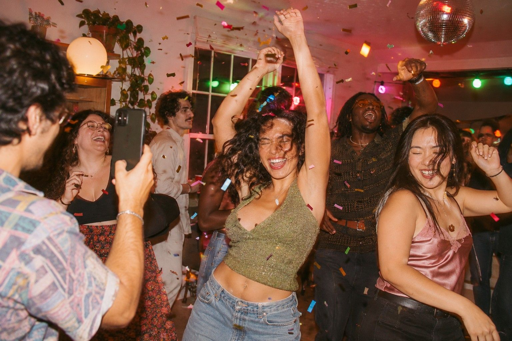
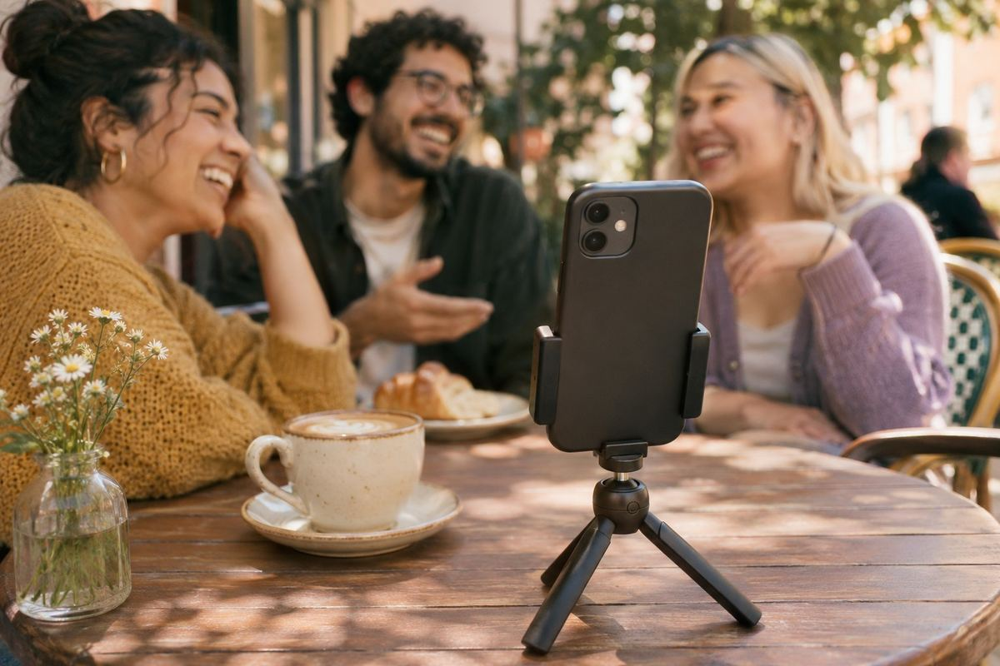
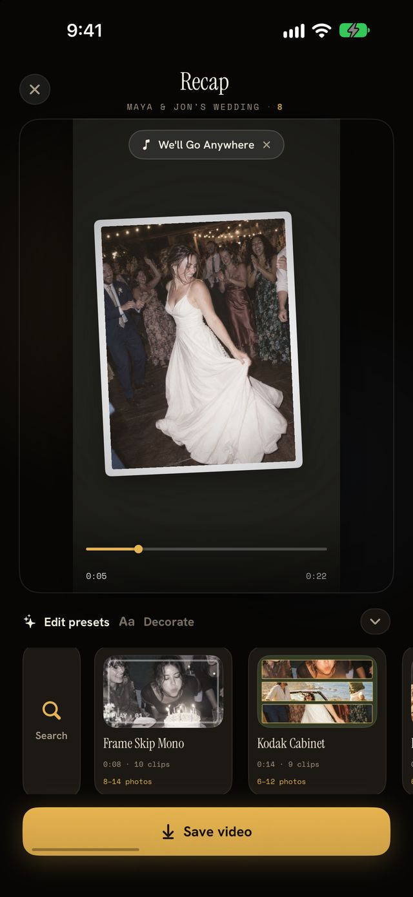
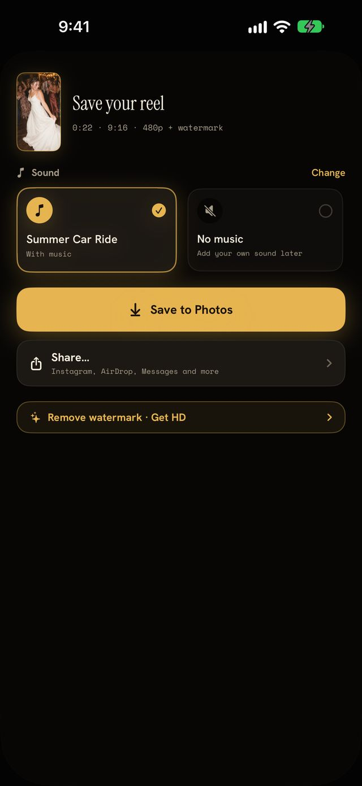

Recap Video Ideas: How to Make a Party or Event Recap Reel
Ten formats, a shot list and the export settings for a 15 to 45 second reel.

Short answer: The best recap video ideas share one shape: a one-second hook, a build of details and faces, the peak moment, then a quiet end card. Film vertical clips of 2 to 5 seconds during the event, cut on the beat, keep the finished recap to 15 to 45 seconds, and export it at 9:16, 1080×1920 and 30 frames per second.
A good recap video is the version of the night people actually rewatch: 30 seconds that make the people who were there grin and the people who weren’t wish they had been. Below you’ll find recap video ideas for parties, weddings and trips, a shot list to work from during the event, a four-part structure with timings, beat math, music rules for posting, and export settings for Reels, TikTok and Shorts.
Recap video ideas that work for any event
Pick a format before the event starts, because it decides what you film. These ten work for a birthday, a wedding weekend, a trip or a team night out.
- The night in 30 seconds. Arrival, build, peak, last song, in that order. The classic, and the one to default to.
- One second per moment. A single second from every part of the day, each cut landing on the beat. Best for long events like a wedding weekend or a road trip.
- POV. Everything shot from your eye line, with on-screen text like “POV: you made it to the lake house.” Hands, drinks, the view from the dance floor.
- Before and after. The empty room at 6 p.m. against the packed dance floor at 11, or getting ready against the walk home. Two clips can carry the joke.
- The countdown. “7 things that happened at Jo’s 30th,” each with a number on screen. Good for trips and funny nights.
- Everyone’s camera. A recap made from guests’ photos and clips, each a different angle on the same night. The most inclusive version, and the hardest to collect (more on that below).
- Photo-dump reel. Stills only, each on screen for half a second or less, over a fast track. No video needed.
- Slow-motion peak. Fast cuts for the build, then the big moment in slow motion: candles, confetti, the sparkler exit.
- Voice-over recap. A line from the toast, or a friend’s voice note, playing over the opening shots before the music comes in.
- Same shot, everyone. Each guest does the same gesture to camera (a cheers, a wave, a jump) and you cut them together on the beat.
A wedding recap reel uses the same bones: getting ready, one ceremony moment, the first dance, the exit. If the couple asked for an unplugged ceremony, don’t film it; start your recap at the recessional.
Want a shortcut? A recap video template does the timing for you. Instagram’s reel templates let you reuse another reel’s music and timing with your own clips, and CapCut offers templates too. They’re fast, but they look like everyone else’s, so they suit a quick post more than a keepsake.
What to film during the event: a recap shot list
Most weak recaps are shot badly, not edited badly: one long, shaky video of the dance floor and nothing else. Short clips of different kinds give you something to cut. Aim for 20 to 40 clips of 2 to 5 seconds over the night, which is enough for a 30-second recap with room to choose.
| Shot | What to film | Clip length |
|---|---|---|
| Establishing | The venue, the sign, the room before guests arrive | 3–5 s |
| Details | The cake, the table, a drink being poured, the speaker playing | 2–3 s each |
| Arrivals | Hugs at the door, the first round of cheers | 3–5 s |
| Faces | Laughing mid-story, reactions to the toast | 2–4 s |
| Motion | Dancing, a walk across the room, a group jumping | 3–5 s |
| The peak | Candles, the first dance, the countdown, confetti | The whole moment |
| The ending | The last song, empty glasses, the walk home | 3–5 s |
Three habits make every clip easier to cut. Hold still for two seconds before and after the action, so you have room to trim on the beat. Shoot vertical unless you also want a widescreen version. And wipe the lens on your shirt before the peak; a smudged lens turns every light into haze. Our guide to taking good photos at a party covers low light and the dance floor in more detail.
A phone on a mini tripod, or propped against a glass, is the easiest way to get a wide shot of the whole table or a time-lapse of the room filling up while you stay in the conversation.

How to collect clips and photos from guests
Your phone sees one angle. A recap gets better with every extra point of view, but collecting is where it stalls, so make it easy and quick.
- Recruit two or three shooters. Ask specific people before the event: one for details, one for the dance floor, one for candids. Specific jobs get more footage than “send me your stuff.”
- Collect the same night or the next morning. AirDrop is quickest in the room between iPhones; a shared album or upload link works for everyone. Our comparison of the best ways to share photos with a group covers which options keep full quality.
- Ask for originals. Clips saved from someone’s story or forwarded through a chat app often lose quality. Ask for the files straight from their camera roll.
- Ask before you post people. Not everyone wants to be on your public feed, and other people’s kids need their parents’ OK.
The lowest-effort version is a shared camera: everyone shoots into one roll from their own phone, and the photos arrive together. That’s how Filmsera works, and its recap builds itself from everyone’s photos (details below).
How to structure a recap video: hook, build, peak, end
Every recap that works has four parts. Use these timings as a starting point, then shift them to where your song’s big moment falls.
| Part | 15 s recap | 30 s recap | 45 s recap | What goes here |
|---|---|---|---|---|
| Hook | 0–1 s | 0–2 s | 0–2 s | The best motion clip, or one line of text that promises what’s coming |
| Build | 1–7 s | 2–15 s | 2–22 s | Details, arrivals and faces in short cuts that set the scene |
| Peak | 7–13 s | 15–26 s | 22–39 s | The loudest moment, cut on the song’s drop or chorus |
| End card | 13–15 s | 26–30 s | 39–45 s | One quiet clip and the name, date or place as text |
The hook carries the most weight, because people scroll past anything that starts slowly. Open on movement (confetti, a jump, glasses meeting), not on a wide shot of a building; save the venue for the build. The end card does the opposite job: slow down, let one calm clip play, and put the event name on screen so the reel still makes sense when someone finds it a year later. For more on deciding what stays in, read turning a roll into a recap worth sharing.
How to edit a recap video to the beat
Pick the song first, then cut the video to it. Find the moment the song lifts, usually the drop or the first chorus, place your peak clip there, and fill backward and forward from it.
Beat math for clip lengths
One beat lasts 60 ÷ BPM seconds. Cutting on every second or fourth beat keeps the edit in time without feeling frantic. Not sure of a song’s tempo? Count the beats in 15 seconds and multiply by 4.
| Tempo | One beat | Cut every 2 beats | Cut every 4 beats |
|---|---|---|---|
| 90 BPM | 0.67 s | 1.3 s | 2.7 s |
| 100 BPM | 0.6 s | 1.2 s | 2.4 s |
| 120 BPM | 0.5 s | 1 s | 2 s |
| 128 BPM | 0.47 s | 0.94 s | 1.9 s |
A pattern that works: cut every 4 beats during the build, every 2 beats at the peak, and let the final clip run long. If you’d rather not place cuts by hand, CapCut’s Auto Cut trims and syncs clips to a selected track or beat pattern automatically.
Text on screen and captions
- Use two or three text cards at most: the hook line, maybe one joke, and the end card.
- Keep each to six words or fewer and leave it up for at least two beats, so people can read it.
- Keep text away from the edges. Meta’s Reels specifications advise leaving at least the top 14%, the bottom 35% and 6% on each side free of text, so captions, buttons and the profile icon don’t cover it. Regular reels have the same overlays, so it’s a good rule for any post.
- If anyone speaks (a toast, a voice note), add captions. CapCut and Edits, Instagram’s free editing app, both generate captions automatically.
Which app to use
Here’s how the main options compare, as of November 2026.
| App | Cost | Good at | Keep in mind |
|---|---|---|---|
| CapCut | Free with in-app purchases | Templates, Auto Cut beat sync, auto captions, export up to 4K at 60 fps | Some features need a paid plan |
| Edits, by Instagram | Free with in-app purchases | Auto captions, 4K export with no watermark, sharing to Instagram | Built around Instagram |
| Instagram’s reel editor | Free | Templates that reuse another reel’s music and timing, plus in-app music | Best when you’re posting on Instagram anyway |
| iMovie | Free | Widescreen edits for a TV or laptop | Projects are widescreen (16:9), so vertical clips get black bars |
| Filmsera | Free to host up to 10 guests | A recap that builds itself from everyone’s photos at the reveal | 10–30 seconds; HD needs Pro or a film pass |
Music for recap videos: what’s safe to post
Music is where most recap posts get into trouble, and the safe habit is simple: add music through the platform whenever you can.
- Personal accounts. Export your video without the song, then add it from Instagram’s or TikTok’s own music library when you post. Baking a commercial track into the file is riskier: Meta’s music guidelines say content “may be blocked, muted or removed” if your use of the music isn’t properly authorized.
- Business accounts, planners and venues. Your post counts as commercial, and the rules tighten. Meta’s guidelines say using music “for commercial or non-personal purposes” is prohibited without the appropriate licenses. TikTok says every song in its Commercial Music Library, more than 600,000 tracks, is pre-cleared for commercial use, while its general library isn’t cleared for brands.
- One file for everywhere. If the same export goes to several platforms, use music you hold the rights to, such as a royalty-free track, and credit the artist when the license asks.
Keep a version of your edit with no music at all. If a platform mutes your audio, you can repost the silent version and add a song in the app in a minute.
Export settings and posting tips
| Setting | Use |
|---|---|
| Aspect ratio | 9:16 vertical |
| Resolution | 1080×1920, the full-HD vertical size (Meta’s Reels ad specs list 1440×2560 for ads) |
| Frame rate | 30 fps, fixed; use 60 only if you shot at 60 |
| File | MP4 or MOV with H.264 video |
| Length | 15–45 seconds for a recap; YouTube Shorts take square or vertical videos up to 3 minutes |
- Post within a day or two, while everyone is still talking about the night.
- Choose a cover frame with faces in it, not the venue sign.
- Put the who and what in the first line of your caption; our photo dump captions work for recaps too.
- Send the file to the group chat as well. Not everyone follows you, and the people in it want their own copy.
- Upload the original export, not a screen recording or a copy that has been through a chat app.
Make a recap from everyone’s photos with Filmsera
If editing isn’t your idea of a good morning after, Filmsera makes the recap from everyone’s photos. The host creates a film on iPhone and shares a QR code or invite link, and guests shoot on their own phones from the free iPhone app or their phone’s browser, with no app or account. Photos stay sealed until the reveal time the host picks: the “Tonight,” “Tomorrow” and “In 3 days” presets develop at 9 p.m., and “Custom” sets any other time, like brunch the next day. Then the whole roll appears at once for everyone in the film, and a 9:16 recap reel builds itself and auto-plays.
- It auto-picks the keepers, dropping blurry shots and collapsing near-duplicate bursts, and uses up to 40 photos plus video clips.
- Cuts snap to the beat automatically, and a Trim screen picks where the song starts.
- There are 9 recap templates, all free, from Wedding Editorial to Sprocket Beat.
- For music, pick one of 6 built-in royalty-free tracks (Creative Commons Attribution, so credit the artist when you post), no music, your own song from Files, or a downloaded, DRM-free song from your Apple Music library.
- Add captions with 20 stickers, from text to film effects.
- “Make a recap” works on any developed film, and on an album or collection in your Library.

A recap usually runs 10 to 30 seconds: a 4-second intro, the photos and about a 2-second outro. Free recaps export at 480p with a Filmsera watermark; HD at 1080×1920 with no watermark comes with Filmsera Pro or a film pass for that film. There are no direct posting buttons, so you save the reel to Photos or send it through the iOS share sheet to Instagram, TikTok, Messages or AirDrop.

The honest limits, as of November 2026: hosting needs an iPhone, browser guests take photos only, video clips need the iPhone app and a Celebration or Wedding film, and a free film covers up to 10 guests, with a one-time pass for bigger events. A recap is a short vertical reel, not a ten-minute slideshow; for that, see our guide to making a wedding slideshow. More on using it for parties and birthdays.
Filmsera builds a beat-synced 9:16 recap from everyone’s photos the moment the film develops. Get Filmsera on the App Store
FAQ
How long should a recap video be?
For a party, wedding or trip, 15 to 45 seconds is the sweet spot, and 30 seconds is a good default. That’s long enough for a hook, a build, a peak and an end card, and short enough that people watch it twice. YouTube Shorts accept up to 3 minutes, but a recap rarely needs that long.
What is the best app to make a recap video?
CapCut is the most flexible free option, with templates, auto captions and Auto Cut beat syncing. Edits, Instagram’s free editor, suits people who post mainly on Instagram. iMovie is better for widescreen edits. If you want the recap built for you from every guest’s photos, Filmsera makes one automatically when the film develops.
What should be in an event recap video?
Cover six kinds of shots: an establishing shot, details like the cake or the table, arrivals, faces mid-laugh, motion such as dancing, and the peak moment, then finish on a quiet ending. Twenty to forty short clips of 2 to 5 seconds give you enough to cut a 30-second recap with options.
Can I use any song in a recap video?
On a personal account, the safest route is to add the song from Instagram’s or TikTok’s own library when you post. Baking a commercial song into the file can get the post muted, blocked or removed. Businesses should use pre-cleared libraries, such as TikTok’s Commercial Music Library, or royalty-free tracks they hold the rights to.
What size should a recap video be for Instagram and TikTok?
Export at 9:16 vertical, 1080×1920 pixels, at a fixed 30 frames per second, as an MP4 or MOV with H.264 video. Keep text away from the edges, especially the bottom third, where captions and buttons sit, so nothing important gets covered when the reel plays.
How do you make a recap video from photos only?
Treat it as a photo-dump reel. Pick 15 to 30 photos, order them hook, build, peak and end, and cut on the beat: half a second per photo on a fast song, 1 to 2 seconds on a slower one. A gentle zoom on each photo adds motion, and one text card at the end gives context.
Written by the Filmsera team
Filmsera is a shared disposable camera app for iPhone: create a film for your event, let guests join by QR code from the app or their phone's browser, and open the whole roll together at the reveal. Download on the App Store →
Photos in this article are illustrations created for Filmsera, not customer photos. App screenshots are from Filmsera on iPhone.